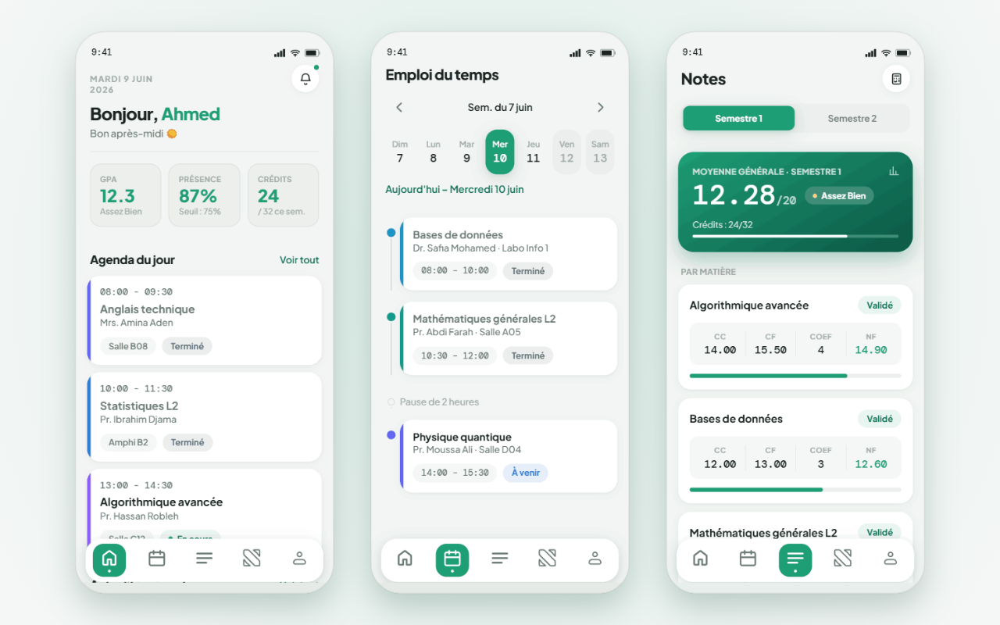
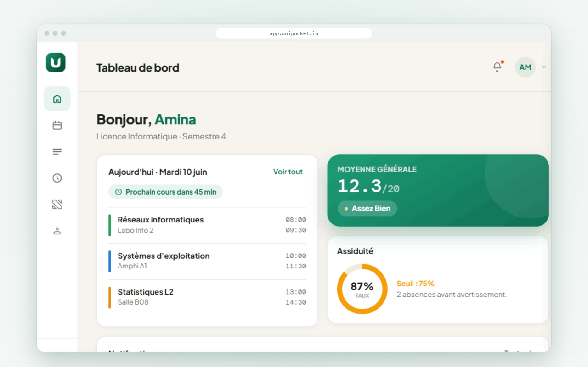
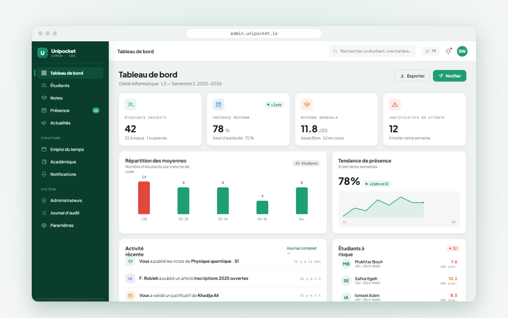

Étudiants
Application mobile
Pour le quotidien. Android d'abord, iOS bientôt. Fonctionne même sans réseau.

Emploi du temps, notes, présences, actualités et carte étudiante de ton université — sur ton téléphone ou sur le web, en français et en arabe, même sans connexion.
Sur le Play Store, l'app porte le nom de ton université.
Unipocket réunit au même endroit tout ce que ton université partage avec ses étudiants. Les mêmes informations, à jour, sur chaque écran.
Pour le quotidien. Android d'abord, iOS bientôt. Fonctionne même sans réseau.

Le même compte depuis n'importe quel navigateur : ordinateur de la bibliothèque, tablette ou iPhone.

Pour le personnel de l'université : publier les actualités, gérer les emplois du temps, les notes et les présences.

Plus besoin de courir entre le tableau d'affichage, le portail web et les groupes WhatsApp.
Vue jour et semaine, salles, enseignants, examens en surbrillance. Exporte tout ton semestre vers le calendrier de ton téléphone.
Contrôle continu, examen, coefficient. Une notification dès la publication — et une alerte si une matière est à risque.
Les annonces vérifiées de l'université, sans rumeurs ni transferts douteux.
Ton taux par matière, tes absences et une projection avant d'atteindre la limite de 75%.
Notes publiées, cours dans 15 min, alerte présence. Et des heures de silence que tu choisis.
FAQ, annuaire du campus, démarches pas à pas et formulaires : réinscription, relevé de notes, rattrapages… sans faire la queue au guichet.
La question que tout étudiant se pose. Unipocket y répond en une seconde, avec la formule affichée — pas de boîte noire.
Un QR code sécurisé pour la bibliothèque, l'accès au campus et les réductions étudiantes. Il change toutes les 60 secondes : une capture d'écran ne sert à rien.
Démonstration — données fictives
La connexion n'est pas toujours fiable. Unipocket garde une copie de tes données sur ton téléphone, pour que tu ne sois jamais bloqué.
Change de langue dès l'écran de connexion. Tout l'affichage bascule instantanément, y compris l'orientation de droite à gauche.
Bonjour, Ahmed 👋
أهلاً، أحمد 👋
Sur ton téléphone ou sur le web, même quand le réseau ne suit pas.
Unipocket suit les règles de l'université : ses facultés et filières, son calendrier, sa notation et son seuil de présence. Le portail d'administration permet au personnel de publier et de mettre à jour les informations que les étudiants reçoivent dans l'app et sur le site.
[Citation réelle — étudiant·e]
[Citation réelle — membre du personnel]
Depuis Google Play ou directement via le fichier APK. Gratuite, sans publicité.
Avec ton numéro étudiant (ex. ETU-2024-0432) et le mot de passe fourni par ton université. Active ensuite l'empreinte ou Face ID.
Choisis ta langue et tes notifications. Ton emploi du temps et tes notes sont déjà là.
Oui. Unipocket est entièrement gratuite pour les étudiants, sans publicité.
Ton numéro étudiant et le mot de passe fourni par ton université. Après 3 essais incorrects, le compte est bloqué 5 minutes par sécurité. En cas d'oubli, adresse-toi à la scolarité.
Oui. Emploi du temps, notes, carte QR, présences et centre d'information restent disponibles hors-ligne. Seules les actions qui nécessitent un envoi (justificatifs, par exemple) attendent le retour du réseau, puis partent automatiquement.
Oui. Le site étudiant donne accès aux mêmes informations, avec le même compte, depuis n'importe quel navigateur.
La version iOS arrive bientôt sur l'App Store. En attendant, tu peux utiliser le site étudiant depuis ton iPhone.
Télécharge le fichier, ouvre-le, puis autorise l'installation depuis cette source quand Android le demande. Ne télécharge l'APK que depuis cette page officielle.
Tes jetons de connexion sont stockés dans l'espace chiffré du téléphone, et le QR code est signé et expire après 60 secondes. Tes données ne sont jamais revendues.
En 10 secondes, tu sais ce que tu as aujourd'hui, où tu en es, et ce que l'université doit te dire.
Sur le Play Store, l'app porte le nom de ton université.
Scanne avec ton téléphone pour télécharger